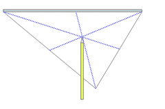
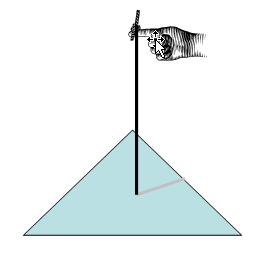

Centroid of a Triangle
The point where the three
medians of the triangle intersect.
The 'center of gravity' of the triangle
One of a triangle's
points of concurrency.
Try this Drag the orange dots at A,B or C and note where the centroid is for various triangle shapes.

Refer to the figure above. Imagine you have a triangular metal plate, and try and balance it on a point - say a pencil tip.
Once you have found the point at which it will balance, that is the centroid.
The centroid of a triangle is the point through which all the mass of a triangular plate seems to act.
Also known as its 'center of gravity' , 'center of mass' , or barycenter.
A fascinating fact is that the centroid is the point where the triangle's
medians
intersect. See
medians of a triangle for more information. In the diagram above, the medians of the triangle are shown as dotted blue lines.
Centroid facts
- The centroid is always inside the triangle
- Each median divides the triangle into two smaller triangles of equal area.
- The centroid is exactly two-thirds the way along each median.
Put another way,
the centroid divides each median into two segments whose lengths are in the ratio 2:1, with the longest one
nearest the vertex. These lengths are shown on the one of the medians in the figure at the top of the page
so you can verify this property for yourself.
Coordinate geometry
If you know the coordinates of the triangle's vertices, you can calculate the coordinates of the centroid.
See Coordinates of centroid.
Summary of triangle centers
There are many types of triangle centers. Below are four of the most common.
In the case of an equilateral triangle,
all four of the above centers occur at the same point.
The Euler line - an interesting fact
It turns out that the orthocenter, centroid, and circumcenter of any triangle are
collinear
- that is,
they always lie on the same straight line called the Euler line, named after its discoverer.
For more, and an interactive demonstration see Euler line definition.
Things to try

- Make any triangle from heavy cardboard. Make it about 12 - 24" wide.
- Mark a point half way along each side.
- Draw a line from each midpoint to the opposite corner. These are the
medians
of the triangle. They should meet at a point - the centroid.
- Make a small hole at the centroid and thread a knotted string through it.
- When held up and suspended by the string it should balance (tricky to get it exactly balanced, but you should get close).
- Explain why.
Other triangle topics
General
Perimeter / Area
Triangle types
Triangle centers
Congruence and Similarity
Solving triangles
Triangle quizzes and exercises
(C) 2011 Copyright Math Open Reference.
All rights reserved